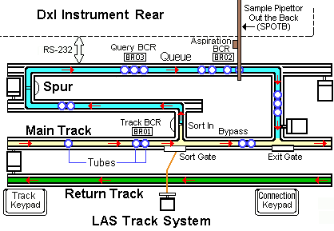

DxI Connection Unit Operating Principles
Purpose
This document describes operating principles for the LAS connection unit.
Connection Unit Module Diagram

Module Function
The connection unit module integrates the DxI to the power processor lab automation system (LAS).
- Sorts the correct sample tubes into the spur for the DxI and lets the other tubes pass.
- Announces the sample ID to the DxI when scanned at the query BCR (BR03).
- Processes tubes through the query and aspiration BCRs according to DxI commands.
- With the DxI, communicates and coordinates tube movements through the queue using a small set of RS-232 serial interface messages. The queue begins at the query BCR and ends at the aspiration BCR.
Sorting Tubes Into the Spur
- In Generic mode, the LAS sorts all DxI tubes into the spur, even when the DxI is in Not Ready mode or powered off, making the Generic mode (= RS-232 communications only) vulnerable to tube jams. Jams of tubes stack up behind the query BCR when the DxI is not ready to run tests.
- In Dynamic mode (= RS-232 + TCP/IP) the DxI communicates its readiness to run tests via TCP/IP to the LAS. Whenever the DxI reports a Not OK status, the LAS directs all tubes to bypass the DxI spur.
Processing Tubes Through the Queue
This table describes how samples are processed after being sorted into the Spur. Examples of the RS-232 messages are shown.
| Stage | Description |
|---|---|
| 1 |
Example of an Add Tube Command for a 13x100 tube: <STX>1<0x83>8823153290<US>1NNAE<ETX> |
| 2 | In response to
Add Tube Command, the DxI sends an
Add Tube Response (<0xC3>) telling the connection unit whether the Add Tube request is accepted or rejected.
If the Add Tube request is accepted:
If the Add Tube request is rejected:
The DxI rejects the Add Tube request for these reasons:
** In Dynamic LAS mode the DxI accepts an Add Tube request when:
Dynamic LAS mode allows tubes that have been sorted into the spur to move through and exit instead of being trapped when the DxI goes to Paused or Not Ready mode, or starts a maintenance routine. Examples of Add Tube Response:
|
| 3 | If the queue is empty when the DxI accepts a tube, then the DxI sends a
Get Tube Command (<0x84>). This command directs the connection unit to scan the tube when it arrives at the aspiration BCR and transmit the sample ID to the DxI.
Example of Get Tube Command: <STX>1<0x84>B5<ETX> |
| 4 | In response toGet Tube Command, the connection unit attempts to scan the tube at the aspiration BCR, then sends a
Get Tube Response (<0xC4>). This response informs the DxI that one of these cases is true:
|
| 5 | When the DxI receives the Code 1 response (bar code read OK at aspiration BCR) to the pre-aspiration scan, the DxI:
Note: If there are no test requests (no download from LIS), then the DxI releases the tube and post a
LAS tube exited the queue without any tests ordered for the sample message to the Event Log.
|
| 6 | After aliquoting the sample, the DxI sends a
Get Tube Command (<0x84>) to force another scan of the tube (still at the aspiration BCR) to verify the sample ID. The response of the connection unit to this command is then interpreted as either success or failure to verify the sample ID.
|
| 7 |
Release Tube Command (<0x85>) directs the connection unit to do three things:
This command also includes a code indicating whether the DxI accepted the aliquot or canceled the tests for the tube being released. If the aliquot was accepted, the code also indicates the volume (in µL) of the accepted aliquot. Examples of the Release Tube Command:
Note: Code 00 (first example) is a special case that instructs the connection unit to hold the tube and repeat the scan. Code 00 happens when the previous <0x85> command was answered with a Code 4 response (failure to read the tube bar code label).
|
| 8 | In response to
Release Tube Command, the connection unit attempts to scan the next tube (except on Code 00), then sends a
Release Tube Response (<0xC5>). This response informs the DxI that one of the following cases are true:
|
| 9 | When the DxI receives the Code 1 response (bar code read OK at aspiration BCR) to the pre-aspiration tube scan, the DxI:
Note: If there are no test requests (no download from LIS), then the DxI sends a
Release Tube Command with Code 05 and posts a
LAS tube exited the queue without any tests ordered for the sample message to the Event Log.
|
| 10 | The process repeats, starting at stage 6 and continues until a Code 2 is sent in stage 8. |
RS-232 Message Structure
For major components, ASCII characters, and structure of RS-232 messages, refer to the LAS: Troubleshoot Communication Data document.
Capturing the RS-232 Data
A data capture utility program is resident on the DxI console for capturing RS-232 communications with the connection unit.
DxI LAS Mode Settings
- Disabled: RS-232 communications with LAS are switched off. The DxI does not respond to any communication attempts from the connection unit.
- Offline: RS-232 communications with LAS are on, but the DxI rejects any tube that arrives at the query BCR with an alarm code (Add Tube Command is rejected with Code 9 in the Add Tube Response).
- Online: RS-232 communications with LAS are on and the Dxl allows normal processing of LAS samples.
LAS Tube Type and DxI Level Sense
The LAS can be configured to use either 13x100 or 13x75 tube sizes, but not both. If systems have an Aliquoter Module, they can be configured for 13x100 tubes can also use secondary tubes. A code included in each Add Tube Command sent from the connection unit tells the DxI the type of tube to expect. The DxI uses this information to apply the correct level sense parameters for the tube.
- 1 = 13x100 tube
- 2 = 13x75 tube
- 5 = Auto-aliquot tube (= secondary tube)
Secondary Tube Bar Code Labels
Secondary tubes (sometimes called daughter tubes) are used only when an optional Aliquoter Module is part of the automation system. The Aliquoter Module draws a portion of the sample from the primary tube and then delivers it into a secondary tube. The secondary tube has a special bar code label applied to it. This special bar code label contains the sample ID from the original primary tube and an extra short bar code that identifies it as a secondary tube.
When the connection unit scans the tube at the query BCR, the presence or absence of the secondary bar code determines which tube-type code (R601 versus R602) is sent in the Add Tube Command. The tube type code determines which level sense parameters the DxI uses for the tube.
Connection Unit Function Codes
- Force tubes to bypass or enter the DxI spur.
- Release tubes that are trapped in the spur.
- Manually load tubes into the connection unit (for alignments, and so on).
| If this function code is entered into the track keypad | Then |
|---|---|
| 01 | All tubes bypass the spur. |
| 50 | All tubes are sorted into the spur. |
| If this function code is entered into the connection keypad | Then |
|---|---|
| 01 | Any tubes sorted into (or currently in) the spur are sent through without being stopped at any bar code readers. Entry of this function code clears all trapped tubes from the entire spur. This function code does not clear the DxI software queue for LAS tubes. |
| 50 | All tubes with a readable bar code scanned at the query BCR are allowed into the queue for the aspiration BCR. |
| 51 | All tubes with a readable bar code that were scanned at the aspiration BCR are gripped and held at the aspiration position for a few seconds, then released. |
| 84 | A
Reset Queue Command (<0x82>) is sent to the DxI, requesting permission to clear the DxI software queue and release all tubes in the queue. The DxI responds by sending a
Reset Queue Response (<0xC2>) indicating whether the request is accepted or rejected. The DxI rejects the request while DxI
Diagnostics
screens are selected. When the request is accepted, the DxI clears the software queue and the connection unit releases all the tubes in the queue (all tubes that had passed the query BCR).
Note: This function code does not release tubes that are stopped at the query BCR.
|
Connection Keypad Error Codes
Open the attached document to view a description list of error codes displayed on the Connection Keypad:
Connection Unit Register Settings
This table describes the register settings that are configured into the Connection Unit PLC (computer module). Refer to the Power Processor Service Manual for more information about these settings.
| Register | Description | Settings |
|---|---|---|
| R500 | Number of digits in the primary bar code.
Note: Setting this number to 0 defaults to the OYA digit in the line computer, but is not recommended for DxI (because of the confusion it causes for the R600 setting).
|
No. of digits or 0 |
| R501 | Number of digits in secondary bar code (= 1 if a check digit is used, = 2 if no check digit).
Note: Do not enter a 0 here unless R504 is also set to 0. This mistake causes all tubes to be designated as secondary tube types in the
Add Tube Command.
|
1 or 2 |
| R504 | Bar code reading mode (=0 to read-only primary bar codes, = 2 to read both primary and secondary tube bar code labels for systems with an Aliquoter Module).
If the system does not have an Aliquoter Module, then set R504 to 0. |
0 or 2 |
| R505 | Code 39 check digit setting (=1 if Code 39 used with check digit). | 0 or 1 |
| R507 | Codabar check digit setting (=0 if Codabar not used or no check digit). | 0 to 5 |
| R508 | ITF check digit setting (=1 if ITF used with check digit). | 0 or 1 |
| R550 | Unit addresses (for up to four DxI systems). | 10 to 14 |
| R600 | Number of bar code digits to send to the DxI in the
Add Tube Command.
Note: Except for custom systems that require it, do not set R600=0. Set R600 to the actual number of digits in the primary bar code. (Setting R600=0 sends the extra digits of the secondary bar code and sends the secondary tube-type code for all tubes.)
|
Equal to R500 (but not if R500=0) |
| R601 | Primary tube type, sent to DxI in the
Add Tube Command when a primary bar code is detected:
1=13x100 2=13x75 5=Auto-aliquot Tube If the system does not have an Aliquoter Module, then set R602 = R601 to ensure that the correct tube-type code is always sent. |
1, 2, or 5 |
| R602 | Secondary tube type, sent to DxI in the
Add Tube Command when a secondary bar code is detected.
If secondary tubes are not used (= no Aliquoter Module), then set R602 equal to R601 (= Primary Tube Type), and verify that R504 is set to 0. If secondary tubes are used (= Aliquoter Module), then set R602 to 5 and verify that R504 is set to 2 and that R600 is not 0. |
1, 2, or 5 |
| R610 | Timer setting (ETX, receiving communication timeout). | 50 |
| R611 | Timer setting (Comm.Test wait timeout). | 200 |
| R612 | Timer setting (Reset Queue Response wait timeout). | 1800 |
| R613 | Timer setting (Get/Release Tube Command wait timeout for tube arrival). | 200 |
| R614 | Timer setting (ACK, NAK wait timeout). | 100 |
| R620 | Timer setting (No Tube monitoring timeout). | 50 |
| R621 | Timer setting (Get/Release Tube Response transmission timeout). | 100 |
| R622 | Timer setting (Add Tube Command resend wait period). | 300 |
Automation FAQs
Open the attached document to view a list of frequently asked questions concerning the Generic mode of DxI automation: